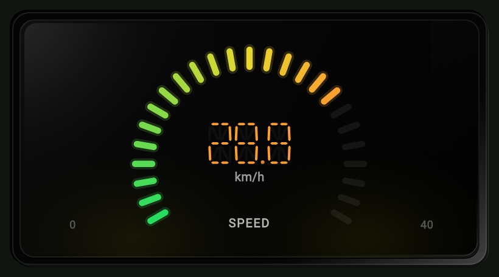

タイム付きスプリントを変換してください
距離と時間から始めてください。より詳しくする場合は、スタートタイプ、タイミング方法、表面、靴、風、または海拔を追加してください。
スプリント時間変換機
30 m、60 mなどの短距離走を計測したら、距離とタイムを入力して100 mの予想タイムを確認できます。スタートや計測方法、走路の種類を指定すれば、条件に合った予測になります。
ウォレットは必要ありません。距離と時間から始めてください。

100mの推定値を使用して、短距離スプリントを共通のスケールに置き、時間とともにあなたのパフォーマンスの変化を追跡してください。
距離と時間から始めてください。より詳しくする場合は、スタートタイプ、タイミング方法、表面、靴、風、または海拔を追加してください。
平均速度をmphまたはkm/hで見つけて、スピードスコアや年齢調整された比較、共有可能な結果と一緒に文脈に置きましょう。
アスリートを採用し、リレーチームを整え、属性を発展させ、個人ベストを追い求め、リーダーボードを上り、その道のちにバッジを収集してください。
記録した距離と時間を入力してください。シンプルモードで迅速な推定を行います。
詳細モードでは、アプリにスタート方法と時計の起動方法を教えてください。フライイングスタートは走り込みを、スタンドストアートは静止からの加速を含みます。
推定値を用いて異なる距離のスプリントを比較し、自分の進捗を追跡してください。

計算例：60 mを7.50秒で走った場合、100 mの予想タイムは11.64秒です。
アプリの「陸上大会」モードで「男性」を選び、60 mと7.50秒を入力します。スターティングブロック、電動計時、陸上スパイク、乾いたゴム製トラック、無風を指定し、年齢と標高は空欄のままにしてください。
11.64秒は予測値です。正式な100 mの記録を得るには、実際に100 mのレースを走り、計時する必要があります。



一つの使用方法はこれです
40ヤードを4.50秒で走ると、全区間の平均速度は18.2 mph（29.3 km/h）です。アプリの40ヤード走モードを使えば、計測方法や走行条件を考慮した100 mの予想タイムがわかります。


スプリントを共有する
短距離走の記録を背景が透明なステッカーとして保存し、自分の写真や動画に重ねられます。InstagramのストーリーズやTikTokに投稿できます。記録だけを一本の動画として保存することもできます。

クワッドレース
補完的な強みを持つリレーチームを編成してください。フォームを管理し、変換を鋭くし、レース条件を処理し、四人のチームが重要な瞬間に成果を出すかどうかを確認してください。